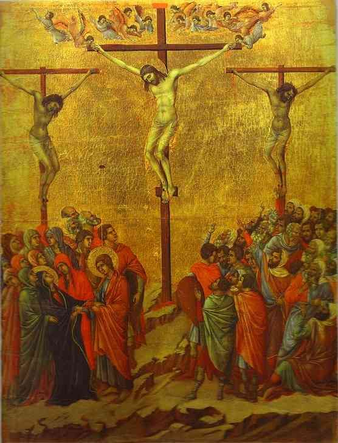

Art Gothique
Description:
L'art gothique est d'abord illustré par l'architecture, mais aussi par la sculpture, la peinture sur bois, le vitrail, et l'enluminure.L’art gothique est avant tout un courant au service de la religion chrétienne. Les images sont créées dans le but d’éduquer les fidèles qui ne savent ni lire ni écrire. L’art gothique transmet un ensemble de règles civiques et morales. Cela sert à conserver l’équilibre social. Il doit être simple et accessible à tous.
Caractéristiques principales:
Les couleurs vives de l’art gothique, souvent sur fond doré, contrastent avec l’absence de couleur du quotidien : au Moyen Âge, le peuple européen vit dans un monde brun, gris et marron. Seuls les vêtements des nobles et des religieux sont constitués de couleurs vives. L’inexistence de l’éclairage ne permet pas d’ajouter du volume aux peintures. Le réalisme dans les traits des personnages s’avère plutôt absent car l’identification d’un individu est signe d’orgueil. Les divers symboles suffisent à identifier les sujets.
